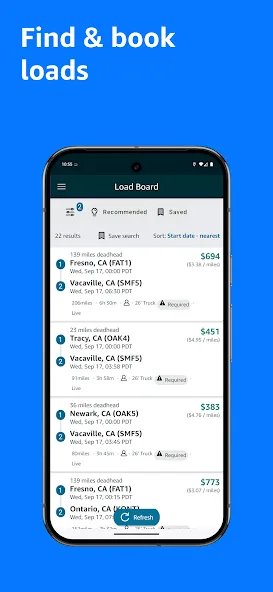

3.1 Как диспетчер ищет и бронирует груз на борде
Борд Relay похож на DAT только внешне. Главные отличия: ставка уже включает топливо и толлы, торговаться не с кем, груз можно забронировать одной кнопкой без звонка и без rate confirmation по e-mail, а обновление списка идёт примерно каждые 30 секунд. Зато здесь нельзя «подержать» груз: нажали Book — вы обязаны его отвезти.

Как читать карточку груза
CDW5 Carteret, NJ → JFK8 Staten Island, NYOne-way · 2 stops$412 all-in
Pickup: Thu 09/04 · 22:00–23:00Delivery: Fri 09/05 · 02:3038 mi · ~1 h 20 min
Trailer: 53' Dry Van · Amazon trailerDrop / HookDriver: Solo
Deadhead to origin: 17 mi (не оплачивается)Toll: includedFSC: included
BidBook now
Схема карточки (не скриншот). Цифры условные. Обратите внимание: 38 миль за $412 — это $10,8/милю, но реальная экономика — это два часа работы ночью плюс 17 миль deadhead и обратный порожний путь.
| Поле | На что смотреть | Ловушка |
|---|---|---|
| Коды площадок | Регион и тип объекта (FC/SC/DS). Знакомый код = вы знаете, сколько там стоят на воротах. | DS ночью может быть закрыт для въезда раньше окна — уточняйте по своей таблице кодов. |
| Окно pickup | Обычно 1 час. Чек-ин в приложении должен попасть в окно, иначе опоздание. | «Arrive by» считается по таймстампу чек-ина в приложении, а не по факту приезда на парковку. |
| Stops | Число стопов. 2 стопа = pickup + delivery. 4–6 стопов = мини-блок с несколькими площадками. | Каждый стоп — своё окно и свой риск опоздания. Время между стопами уже посчитано Amazon без запаса. |
| Live / Drop | Drop — приехал, отцепил, прицепил, уехал. Live — стоите под погрузкой. | Live на IXD в пик — это 2–4 часа. Детеншн Amazon начисляет не всегда автоматически. |
| Trailer status | Loaded / Empty / Amazon trailer / Your trailer. | Если требуется свой трейлер, а у вас Power Only — фильтр должен это отсеять; проверьте настройки профиля. |
| Ставка all-in | Base + fuel surcharge + tolls в одной сумме. Что видите, то и получите. | Deadhead к origin и от destination не входит никогда. Считайте полный круг. |
| Book now / Bid | Book now — мгновенно ваш. Bid — Amazon выберет лучшее предложение к дедлайну. | Бид, который Amazon принял, — это тоже обязательство. Не ставьте биды на грузы, которые не сможете отвезти при выигрыше. |
Расчёт: брать или не брать
Считайте не ставку за милю по карточке, а доход на час трака за полный круг. Формула диспетчера:
Реальный RPM = ставка all-in ÷ (deadhead к origin + мили груза + deadhead к следующему грузу или домой)
Доход в час = ставка all-in ÷ (время в пути + время на площадках + deadhead-время)
Пример: $412 за 38 миль. Deadhead 17 миль туда, 20 миль обратно на базу. Итого 75 миль → реальный RPM $5,49. Время: 40 мин deadhead + 1 ч 20 мин груз + 30 мин на каждой площадке + 40 мин домой ≈ 3 ч 40 мин → $112 в час. Для ночного локального плеча это отлично. Тот же расчёт для «$1 850 за 900 миль» с 120 милями deadhead даёт $1,81/милю и около $95 в час с учётом сна водителя — уже спорно.
Ставки Relay по дистанции: ориентир 2025–2026, 53' dry van
$/милю all-in, по данным перевозчиков
10–75 миль (локал)$2,50–4,00+
75–200 миль$2,25–3,00
200–500 миль$2,10–2,75
500+ миль$1,85–2,50
Диапазоны сведены из нескольких открытых обзоров перевозчиков за 2025–2026; на коротком плече за милю платят больше, но и часов на площадках больше. Amazon официальных ставок не публикует. Сезонность: январь–сентябрь ниже, октябрь–январь и недели вокруг Prime Day заметно выше.
Правила бронирования, которые нельзя нарушать
⏳
Забронированный груз «истёк» = отказ
Если вы забронировали груз и не назначили водителя / водитель не начал трип к сроку, система снимает груз и засчитывает это как rejection в Acceptance score. Бронируйте только то, на что есть конкретный водитель прямо сейчас.
🔁
Двойной букинг
Один трак на два пересекающихся трипа система может пропустить, если трак не привязан жёстко. Дальше — отказ от одного из них с полным штрафом. Держите календарь траков вне Relay.
🔄
Reload-подсказки
После бронирования борд предлагает следующий груз из точки доставки. Это самый дешёвый способ убрать пустой обратный путь. Смотрите сразу при бронировании, а не после доставки.
🔥
Hot Loads и Relay Assistant
Срочные грузы получают повышенную ставку. Для перевозчиков с высоким грейдом Relay Assistant (ИИ-помощник в приложении) может предложить контроффер на срочный spot-груз — единственный случай «переговоров» в Relay.

Источники: How to use Amazon Relay's load board, Understanding Amazon Relay rates. Диапазоны ставок — открытые обзоры перевозчиков (otrucking, truckdispatchexperts, carrierproacademy), не Amazon.